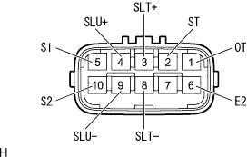
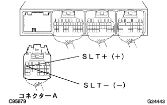

DTC P1760/77 Line pressure control linear SOL system |
| DTC No. | DTC detection conditions 1. Diagnosis conditions 2. Abnormal state 3. Announced period | Inspection site |
|---|---|---|
| P1760/77 |
|
|
| Step 1 | Trans mission wire single inspection (SLT) |
|  |
Cut the transmission wire connector.
Use SST (Toyota Electrical Tester) to check the resistance between terminals.
| Terminal number (terminal symbol) | Resistance value [ω] |
|---|---|
| 3 (SLT+) ← → 8 (SLT-) | 5.1-5.5 (20 ° C) |
Inspect the insulation of the terminal using SST (Toyota Electrical Tester).
| Terminal number (terminal symbol) | Resistance value |
|---|---|
| 3 (SLT+) ← → Body Earth | 1mΩ or higher |
|
| ||||
| OK | |
| Step 2 | Wire harness or connector inspection (transmission wire-engine control computer) |
Connect the transmission wire connector and separate the connector A of the engine control computer.
|  |
Use SST (Toyota Electrical Tester) to check the resistance between terminals.(The terminal array isreference)
| Terminal number (terminal symbol) | Resistance value [ω] |
|---|---|
| A17 (SLT+) ← → A16 (SLT-) | 5.1-5.5 (20 ° C) |
|
| ||||
| OK | ||
| ||
| Step 3 | Line pressure control Solenoid ASSY Single Inspection (SLT) |
Lines Control Solenoid ASSY (SLT) Cut the connector.
Use SST (Toyota Electrical Tester) to check the resistance between terminals.
|
| ||||
| OK | ||
| ||